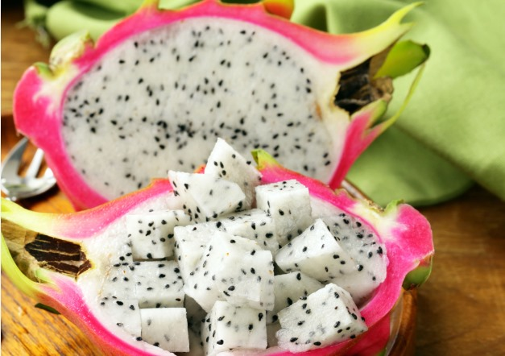
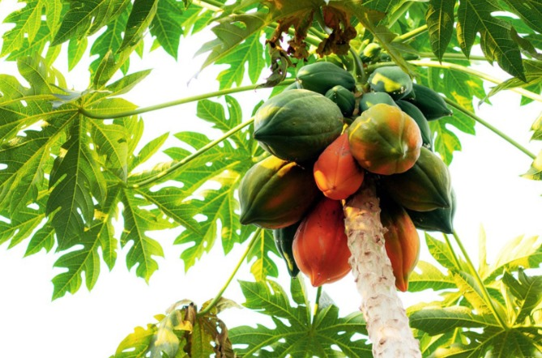

Fruit Plants
-

Dragon Fruit Plant
Description:Dragon fruit grows on the Hylocereus cactus, also known as the Honolulu queen, whose flowers only open at night. The plant is native to southern Mexico and Central America. Today, it is grown all over the world. It goes by many names, including pitaya, pitahaya, and strawberry pear. The two most common types have bright red skin with green scales that resemble a dragon — hence the name. The most widely available variety has white pulp with black seeds, though a less common type with red pulp and black seeds exists as well. Another variety — referred to as yellow dragon fruit — has yellow skin and white pulp with black seeds. Dragon fruit may look exotic, but its flavors are similar to other fruits. Its taste has been described as a slightly sweet cross between a kiwi and a pear.
-

Papaya Plant
Description:The papaya is a small, sparsely branched tree, usually with a single stem growing from 5 to 10 m (16 to 33 ft) tall, with spirally arranged leaves confined to the top of the trunk. The lower trunk is conspicuously scarred where leaves and fruit were borne. The leaves are large, 50–70 cm (20–28 in) in diameter, deeply palmately lobed, with seven lobes. All plant parts contain latex in articulated laticifers.